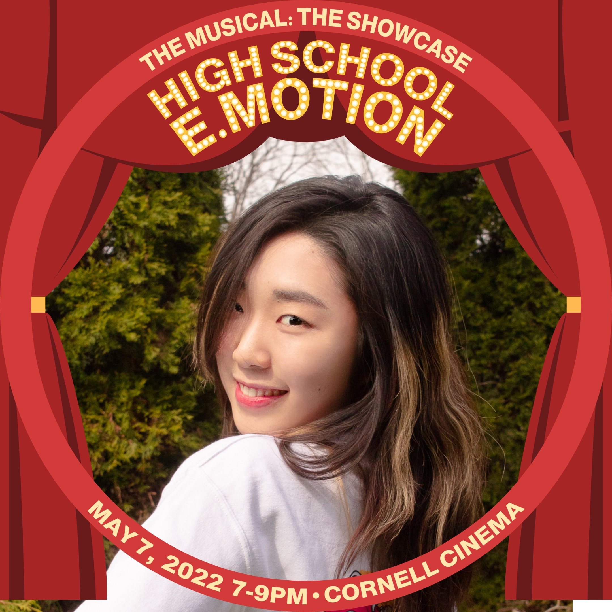

Me as a Dancer!

Besides being a computer science student, I am also a dancer since the age of 5 and was exposed to various dance styles mostly ballet, hip-hop, jazz, and contemporary. Dancing is always the best way for me to relieve stress and indulge in beautiful movements and music.
I started technically training in ballet at the age 5. Even though I was not able to keep doing ballet due to foot injuries, I explored other dance styles like jazz and hiphop in my high school. I've participated in high school dancing showcase for four years and continued to explore as an interest in college. Currently, I am a choreo leader of kpop dance club E.Motion at Cornell University.
My Dance Covers
As a member and choreo leader of kpop dance club, I've been participated in numerous dance covers. The most recent ones are Hype Boy by New Jeans, Antifragile and Fearless by LE SERRAFIM, and a fun dance Catallena + Super Tuna by Orange Caramel and Jin of BTS, etc.
Check out my dance cover: Antifragile by LE SSERAFIM!!